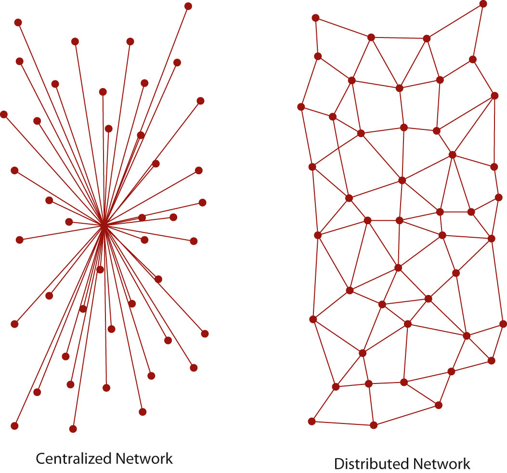

From its early days as a military-only network to its current status as one of the developed world’s primary sources of information and communication, the InternetA web of interconnected computers and all of the information publicly available on these computers. has come a long way in a short period of time. Yet there are a few elements that have stayed constant and that provide a coherent thread for examining the origins of the now-pervasive medium. The first is the persistence of the Internet—its Cold War beginnings necessarily influencing its design as a decentralized, indestructible communication network.
The second element is the development of rules of communication for computers that enable the machines to turn raw data into useful information. These rules, or protocolsAn agreed-upon set of rules for two or more entities to communicate over a network., have been developed through consensus by computer scientists to facilitate and control online communication and have shaped the way the Internet works. Facebook is a simple example of a protocol: Users can easily communicate with one another, but only through acceptance of protocols that include wall posts, comments, and messages. Facebook’s protocols make communication possible and control that communication.
These two elements connect the Internet’s origins to its present-day incarnation. Keeping them in mind as you read will help you comprehend the history of the Internet, from the Cold War to the Facebook era.
The near indestructibility of information on the Internet derives from a military principle used in secure voice transmission: decentralizationThe principle that there should be no central hub that controls information flow. Instead, information is transferred via protocols that allow any computer to communicate directly with any other computer.. In the early 1970s, the RAND Corporation developed a technology (later called “packet switching”) that allowed users to send secure voice messages. In contrast to a system known as the hub-and-spoke model, where the telephone operator (the “hub”) would patch two people (the “spokes”) through directly, this new system allowed for a voice message to be sent through an entire network, or web, of carrier lines, without the need to travel through a central hub, allowing for many different possible paths to the destination.
During the Cold War, the U.S. military was concerned about a nuclear attack destroying the hub in its hub-and-spoke model; with this new web-like model, a secure voice transmission would be more likely to endure a large-scale attack. A web of data pathways would still be able to transmit secure voice “packets,” even if a few of the nodes—places where the web of connections intersected—were destroyed. Only through the destruction of all the nodes in the web could the data traveling along it be completely wiped out—an unlikely event in the case of a highly decentralized network.
This decentralized network could only function through common communication protocols. Just as we use certain protocols when communicating over a telephone—“hello,” “goodbye,” and “hold on for a minute” are three examples—any sort of machine-to-machine communication must also use protocols. These protocols constitute a shared language enabling computers to understand each other clearly and easily.
In 1973, the U.S. Defense Advanced Research Projects Agency (DARPA) began research on protocols to allow computers to communicate over a distributed networkA web of computers connected to one another, allowing intercomputer communication.. This work paralleled work done by the RAND Corporation, particularly in the realm of a web-based network model of communication. Instead of using electronic signals to send an unending stream of ones and zeros over a line (the equivalent of a direct voice connection), DARPA used this new packet-switching technology to send small bundles of data. This way, a message that would have been an unbroken stream of binary data—extremely vulnerable to errors and corruption—could be packaged as only a few hundred numbers.
Figure 11.2
Centralized versus distributed communication networks
Imagine a telephone conversation in which any static in the signal would make the message incomprehensible. Whereas humans can infer meaning from “Meet me [static] the restaurant at 8:30” (we replace the static with the word at), computers do not necessarily have that logical linguistic capability. To a computer, this constant stream of data is incomplete—or “corrupted,” in technological terminology—and confusing. Considering the susceptibility of electronic communication to noise or other forms of disruption, it would seem like computer-to-computer transmission would be nearly impossible.
However, the packets in this packet-switching technology have something that allows the receiving computer to make sure the packet has arrived uncorrupted. Because of this new technology and the shared protocols that made computer-to-computer transmission possible, a single large message could be broken into many pieces and sent through an entire web of connections, speeding up transmission and making that transmission more secure.
One of the necessary parts of a network is a host. A host is a physical node that is directly connected to the Internet and “directs traffic” by routing packets of data to and from other computers connected to it. In a normal network, a specific computer is usually not directly connected to the Internet; it is connected through a host. A host in this case is identified by an Internet Protocol, or IP, address (a concept that is explained in greater detail later). Each unique IP address refers to a single location on the global Internet, but that IP address can serve as a gateway for many different computers. For example, a college campus may have one global IP address for all of its students’ computers, and each student’s computer might then have its own local IP address on the school’s network. This nested structure allows billions of different global hosts, each with any number of computers connected within their internal networks. Think of a campus postal system: All students share the same global address (1000 College Drive, Anywhere, VT 08759, for example), but they each have an internal mailbox within that system.
The early Internet was called ARPANET, after the U.S. Advanced Research Projects Agency (which added “Defense” to its name and became DARPA in 1973), and consisted of just four hosts: UCLA, Stanford, UC Santa Barbara, and the University of Utah. Now there are over half a million hosts, and each of those hosts likely serves thousands of people.Central Intelligence Agency, “Country Comparison: Internet Hosts,” World Factbook, https://www.cia.gov/library/publications/the-world-factbook/rankorder/2184rank.html. Each host uses protocols to connect to an ever-growing network of computers. Because of this, the Internet does not exist in any one place in particular; rather, it is the name we give to the huge network of interconnected computers that collectively form the entity that we think of as the Internet. The Internet is not a physical structure; it is the protocols that make this communication possible.
Figure 11.3

A TCP gateway is like a post office because of the way that it directs information to the correct location.
One of the other core components of the Internet is the Transmission Control Protocol (TCP) gateway. Proposed in a 1974 paper, the TCP gateway acts “like a postal service.”Vinton Cerf, Yogen Dalal, and Carl Sunshine, “Specification of Internet Transmission Control Program,” December 1974, http://tools.ietf.org/html/rfc675. Without knowing a specific physical address, any computer on the network can ask for the owner of any IP address, and the TCP gateway will consult its directory of IP address listings to determine exactly which computer the requester is trying to contact. The development of this technology was an essential building block in the interlinking of networks, as computers could now communicate with each other without knowing the specific address of a recipient; the TCP gateway would figure it all out. In addition, the TCP gateway checks for errors and ensures that data reaches its destination uncorrupted. Today, this combination of TCP gateways and IP addresses is called TCP/IP and is essentially a worldwide phone book for every host on the Internet.
Email has, in one sense or another, been around for quite a while. Originally, electronic messages were recorded within a single mainframe computer system. Each person working on the computer would have a personal folder, so sending that person a message required nothing more than creating a new document in that person’s folder. It was just like leaving a note on someone’s desk,Ian Peter, “The History of Email,” The Internet History Project, 2004, http://www.nethistory.info/History%20of%20the%20Internet/email.html. so that the person would see it when he or she logged onto the computer.
However, once networks began to develop, things became slightly more complicated. Computer programmer Ray Tomlinson is credited with inventing the naming system we have today, using the @ symbol to denote the server (or host, from the previous section). In other words, name@gmail.com tells the host “gmail.com” (Google’s email server) to drop the message into the folder belonging to “name.” Tomlinson is credited with writing the first network email using his program SNDMSG in 1971. This invention of a simple standard for email is often cited as one of the most important factors in the rapid spread of the Internet, and is still one of the most widely used Internet services.
The use of email grew in large part because of later commercial developments, especially America Online, that made connecting to email much easier than it had been at its inception. Internet service providers (ISPs) packaged email accounts with Internet access, and almost all web browsers (such as Netscape, discussed later in the section) included a form of email service. In addition to the ISPs, email services like Hotmail and Yahoo! Mail provided free email addresses paid for by small text ads at the bottom of every email message sent. These free “webmail” services soon expanded to comprise a large part of the email services that are available today. Far from the original maximum inbox sizes of a few megabytes, today’s email services, like Google’s Gmail service, generally provide gigabytes of free storage space.
Email has revolutionized written communication. The speed and relatively inexpensive nature of email makes it a prime competitor of postal services—including FedEx and UPS—that pride themselves on speed. Communicating via email with someone on the other end of the world is just as quick and inexpensive as communicating with a next-door neighbor. However, the growth of Internet shopping and online companies such as Amazon.com has in many ways made the postal service and shipping companies more prominent—not necessarily for communication, but for delivery and remote business operations.
In 1989, Tim Berners-Lee, a graduate of Oxford University and software engineer at CERN (the European particle physics laboratory), had the idea of using a new kind of protocol to share documents and information throughout the local CERN network. Instead of transferring regular text-based documents, he created a new language called hypertext markup language (HTML). Hypertext was a new word for text that goes beyond the boundaries of a single document. Hypertext can include links to other documents (hyperlinks), text-style formatting, images, and a wide variety of other components. The basic idea is that documents can be constructed out of a variety of links and can be viewed just as if they are on the user’s computer.
This new language required a new communication protocol so that computers could interpret it, and Berners-Lee decided on the name hypertext transfer protocol (HTTP). Through HTTP, hypertext documents can be sent from computer to computer and can then be interpreted by a browser, which turns the HTML files into readable web pages. The browser that Berners-Lee created, called World Wide Web, was a combination browser-editor, allowing users to view other HTML documents and create their own.Tim Berners-Lee, “The WorldWideWeb Browser,” 2009, http://www.w3.org/People/Berners-Lee/WorldWideWeb.
Figure 11.4

Tim Berners-Lee’s first web browser was also a web page editor.
Modern browsers, like Microsoft Internet Explorer and Mozilla Firefox, only allow for the viewing of web pages; other increasingly complicated tools are now marketed for creating web pages, although even the most complicated page can be written entirely from a program like Windows Notepad. The reason web pages can be created with the simplest tools is the adoption of certain protocols by the most common browsers. Because Internet Explorer, Firefox, Apple Safari, Google Chrome, and other browsers all interpret the same code in more or less the same way, creating web pages is as simple as learning how to speak the language of these browsers.
In 1991, the same year that Berners-Lee created his web browser, the Internet connection service Q-Link was renamed America Online, or AOL for short. This service would eventually grow to employ over 20,000 people, on the basis of making Internet access available (and, critically, simple) for anyone with a telephone line. Although the web in 1991 was not what it is today, AOL’s software allowed its users to create communities based on just about any subject, and it only required a dial-up modem—a device that connects any computer to the Internet via a telephone line—and the telephone line itself.
In addition, AOL incorporated two technologies—chat rooms and Instant Messenger—into a single program (along with a web browser). Chat rooms allowed many users to type live messages to a “room” full of people, while Instant Messenger allowed two users to communicate privately via text-based messages. The most important aspect of AOL was its encapsulation of all these once-disparate programs into a single user-friendly bundle. Although AOL was later disparaged for customer service issues like its users’ inability to deactivate their service, its role in bringing the Internet to mainstream users was instrumental.Tom Zeller, Jr., “Canceling AOL? Just Offer Your Firstborn,” New York Times, August 29, 2005, allhttp://www.nytimes.com/2005/08/29/technology/29link.html.
In contrast to AOL’s proprietary services, the World Wide Web had to be viewed through a standalone web browser. The first of these browsers to make its mark was the program Mosaic, released by the National Center for Supercomputing Applications at the University of Illinois. Mosaic was offered for free and grew very quickly in popularity due to features that now seem integral to the web. Things like bookmarks, which allow users to save the location of particular pages without having to remember them, and images, now an integral part of the web, were all inventions that made the web more usable for many people.National Center for Supercomputing Appliances, “About NCSA Mosaic,” 2010, http://www.ncsa.illinois.edu/Projects/mosaic.html.
Although the web browser Mosaic has not been updated since 1997, developers who worked on it went on to create Netscape Navigator, an extremely popular browser during the 1990s. AOL later bought the Netscape company, and the Navigator browser was discontinued in 2008, largely because Netscape Navigator had lost the market to Microsoft’s Internet Explorer web browser, which came preloaded on Microsoft’s ubiquitous Windows operating system. However, Netscape had long been converting its Navigator software into an open-source program called Mozilla Firefox, which is now the second-most-used web browser on the Internet (detailed in Table 11.1 "Browser Market Share (as of February 2010)").NetMarketShare, “Browser Market Share,” http://marketshare.hitslink.com/browser-market-share.aspx?qprid=0&qpcal=1&qptimeframe=M&qpsp=132. Firefox represents about a quarter of the market—not bad, considering its lack of advertising and Microsoft’s natural advantage of packaging Internet Explorer with the majority of personal computers.
Table 11.1 Browser Market Share (as of February 2010)
Browser |
Total Market Share |
|---|---|
Microsoft Internet Explorer |
62.12% |
Firefox |
24.43% |
Chrome |
5.22% |
Safari |
4.53% |
Opera |
2.38% |
As web browsers became more available as a less-moderated alternative to AOL’s proprietary service, the web became something like a free-for-all of startup companies. The web of this period, often referred to as Web 1.0, featured many specialty sites that used the Internet’s ability for global, instantaneous communication to create a new type of business. Another name for this free-for-all of the 1990s is the “dot-com boom.” During the boom, it seemed as if almost anyone could build a website and sell it for millions of dollars. However, the “dot-com crash” that occurred later that decade seemed to say otherwise. Quite a few of these Internet startup companies went bankrupt, taking their shareholders down with them. Alan Greenspan, then the chairman of the U.S. Federal Reserve, called this phenomenon “irrational exuberance,”Alan Greenspan, “The Challenge of Central Banking in a Democratic Society, ” (lecture, American Enterprise Institute for Public Policy Research, Washington, DC, December 5, 1996), http://www.federalreserve.gov/boarddocs/speeches/1996/19961205.htm. in large part because investors did not necessarily know how to analyze these particular business plans, and companies that had never turned a profit could be sold for millions. The new business models of the Internet may have done well in the stock market, but they were not necessarily sustainable. In many ways, investors collectively failed to analyze the business prospects of these companies, and once they realized their mistakes (and the companies went bankrupt), much of the recent market growth evaporated. The invention of new technologies can bring with it the belief that old business tenets no longer apply, but this dangerous belief—the “irrational exuberance” Greenspan spoke of—is not necessarily conducive to long-term growth.
Some lucky dot-com businesses formed during the boom survived the crash and are still around today. For example, eBay, with its online auctions, turned what seemed like a dangerous practice (sending money to a stranger you met over the Internet) into a daily occurrence. A less-fortunate company, eToys.com, got off to a promising start—its stock quadrupled on the day it went public in 1999—but then filed for Chapter 11 "The Internet and Social Media" bankruptcy in 2001.Cecily Barnes, “eToys files for Chapter 11,” CNET, March 7, 2001, http://news.cnet.com/2100-1017-253706.html.
One of these startups, theGlobe.com, provided one of the earliest social networking services that exploded in popularity. When theGlobe.com went public, its stock shot from a target price of $9 to a close of $63.50 a share.Dawn Kawamoto, “TheGlobe.com’s IPO one for the books,” CNET, November 13, 1998, http://news.cnet.com/2100-1023-217913.html. The site itself was started in 1995, building its business on advertising. As skepticism about the dot-com boom grew and advertisers became increasingly skittish about the value of online ads, theGlobe.com ceased to be profitable and shut its doors as a social networking site.theglobe.com, “About Us,” 2009, http://www.theglobe.com/. Although advertising is pervasive on the Internet today, the current model—largely based on the highly targeted Google AdSense service—did not come around until much later. In the earlier dot-com years, the same ad might be shown on thousands of different web pages, whereas now advertising is often specifically targeted to the content of an individual page.
However, that did not spell the end of social networking on the Internet. Social networking had been going on since at least the invention of Usenet in 1979 (detailed later in the chapter), but the recurring problem was always the same: profitability. This model of free access to user-generated content departed from almost anything previously seen in media, and revenue streams would have to be just as radical.
The shared, generalized protocols of the Internet have allowed it to be easily adapted and extended into many different facets of our lives. The Internet shapes everything, from our day-to-day routine—the ability to read newspapers from around the world, for example—to the way research and collaboration are conducted. There are three important aspects of communication that the Internet has changed, and these have instigated profound changes in the way we connect with one another socially: the speed of information, the volume of information, and the “democratization” of publishing, or the ability of anyone to publish ideas on the web.
One of the Internet’s largest and most revolutionary changes has come about through social networking. Because of Twitter, we can now see what all our friends are doing in real time; because of blogs, we can consider the opinions of complete strangers who may never write in traditional print; and because of Facebook, we can find people we haven’t talked to for decades, all without making a single awkward telephone call.
Recent years have seen an explosion of new content and services; although the phrase “social media” now seems to be synonymous with websites like Facebook and Twitter, it is worthwhile to consider all the ways a social media platform affects the Internet experience.
Almost as soon as TCP stitched the various networks together, a former DARPA scientist named Larry Roberts founded the company Telnet, the first commercial packet-switching company. Two years later, in 1977, the invention of the dial-up modem (in combination with the wider availability of personal computers like the Apple II) made it possible for anyone around the world to access the Internet. With availability extended beyond purely academic and military circles, the Internet quickly became a staple for computer hobbyists.
One of the consequences of the spread of the Internet to hobbyists was the founding of Usenet. In 1979, University of North Carolina graduate students Tom Truscott and Jim Ellis connected three computers in a small network and used a series of programming scripts to post and receive messages. In a very short span of time, this system spread all over the burgeoning Internet. Much like an electronic version of community bulletin boards, anyone with a computer could post a topic or reply on Usenet.
The group was fundamentally and explicitly anarchic, as outlined by the posting “What is Usenet?” This document says, “Usenet is not a democracy … there is no person or group in charge of Usenet …Usenet cannot be a democracy, autocracy, or any other kind of ‘-acy.’”Mark Moraes, Chip Salzenberg, and Gene Spafford, “What is Usenet?” December 28, 1999, http://www.faqs.org/faqs/usenet/what-is/part1/. Usenet was not used only for socializing, however, but also for collaboration. In some ways, the service allowed a new kind of collaboration that seemed like the start of a revolution: “I was able to join rec.kites and collectively people in Australia and New Zealand helped me solve a problem and get a circular two-line kite to fly,” one user told the United Kingdom’s Guardian.Simon Jeffery and others, “A People’s History of the Internet: From Arpanet in 1969 to Today,” Guardian (London), October 23, 2009, http://www.guardian.co.uk/technology/interactive/2009/oct/23/internet-arpanet.
Fast-forward to 1995: The president and founder of Beverly Hills Internet, David Bohnett, announces that the name of his company is now “GeoCities.” GeoCities built its business by allowing users (“homesteaders”) to create web pages in “communities” for free, with the stipulation that the company placed a small advertising banner at the top of each page. Anyone could register a GeoCities site and subsequently build a web page about a topic. Almost all of the community names, like Broadway (live theater) and Athens (philosophy and education), were centered on specific topics.While GeoCities is no longer in business, the Internet Archive maintains the site at http://www.archive.org/web/geocities.php. Information taken from December 21, 1996.
This idea of centering communities on specific topics may have come from Usenet. In Usenet, the domain alt.rec.kites refers to a specific topic (kites) within a category (recreation) within a larger community (alternative topics). This hierarchical model allowed users to organize themselves across the vastness of the Internet, even on a large site like GeoCities. The difference with GeoCities was that it allowed users to do much more than post only text (the limitation of Usenet), while constraining them to a relatively small pool of resources. Although each GeoCities user had only a few megabytes of web space, standardized pictures—like mailbox icons and back buttons—were hosted on GeoCities’s main server. GeoCities was such a large part of the Internet, and these standard icons were so ubiquitous, that they have now become a veritable part of the Internet’s cultural history. The Web Elements category of the site Internet Archaeology is a good example of how pervasive GeoCities graphics became.Internet Archaeology, 2010, http://www.internetarchaeology.org/swebelements.htm.
GeoCities built its business on a freemium model, where basic services are free but subscribers pay extra for things like commercial pages or shopping carts. Other Internet businesses, like Skype and Flickr, use the same model to keep a vast user base while still profiting from frequent users. Since loss of online advertising revenue was seen as one of the main causes of the dot-com crash, many current web startups are turning toward this freemium model to diversify their income streams.Claire Cain Miller, “Ad Revenue on the Web? No Sure Bet,” New York Times, May 24, 2009, http://www.nytimes.com/2009/05/25/technology/start-ups/25startup.html.
GeoCities’s model was so successful that the company Yahoo! bought it for $3.6 billion at its peak in 1999. At the time, GeoCities was the third-most-visited site on the web (behind Yahoo! and AOL), so it seemed like a sure bet. A decade later, on October 26, 2009, Yahoo! closed GeoCities for good in every country except Japan.
Diversification of revenue has become one of the most crucial elements of Internet businesses; from the Wall Street Journal online to YouTube, almost every website is now looking for multiple income streams to support its services.
Websites have many different ways of paying for themselves, and this can say a lot about both the site and its audience. The business models of today’s websites may also directly reflect the lessons learned during the early days of the Internet. Start this exercise by reviewing a list of common ways that websites pay for themselves, how they arrived at these methods, and what it might say about them:
Choose a website that you visit often, and list which of these revenue streams the site might have. How might this affect the content on the site? Is there a visible effect, or does the site try to hide it? Consider how events during the early history of the Internet may have affected the way the site operates now. Write down a revenue stream that the site does not currently have and how the site designers might implement such a revenue stream.